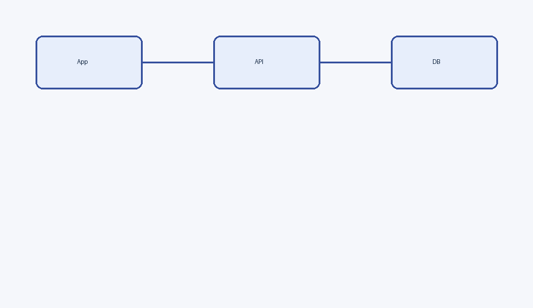
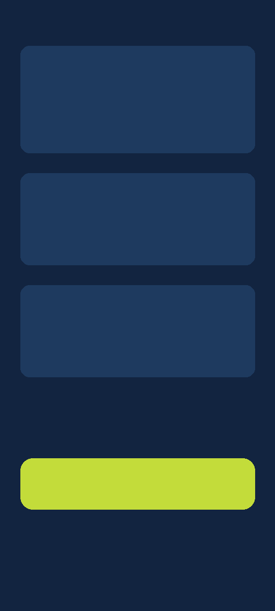

Acme
Documentación técnica de la plataforma: funcionalidades, funcionamiento, pantallas y modelo de datos
Fecha: 30 de octubre de 2026
Frontend: Android · Kotlin + Jetpack Compose (Material 3)
Backend: Rust · Axum 0.8 + SQLx · PostgreSQL
Repositorios: acme/app (b307723) · acme/server (c47680c)
Este documento de ejemplo muestra cada bloque que el generador sabe maquetar. Sustituye el contenido por el tuyo y conserva las clases.
Índice
1.Resumen ejecutivo
Un párrafo de cuerpo con negrita, cursiva, código en línea y un color de acento. El texto se lee del HTML: el generador no contiene prosa.
21endpoints REST
(4 públicos · 17 con JWT)
5tablas en
PostgreSQL
3pantallas +
5 diálogos
Estado del proyecto. Primera versión funcional; faltan tests automatizados, CI y refresh tokens.
1.1 Qué cubre este documento
- Las funcionalidades, agrupadas por pantalla.
- El modelo de datos y las migraciones.
- Los riesgos técnicos y el trabajo pendiente.

Diagrama de componentes: app ↔ API REST ↔ PostgreSQL
2.Pantallas y modelo de datos
Cada pantalla se documenta con su captura a la izquierda y la explicación a la derecha.

Pantalla de acceso (login)
AuthScreen · modo «Acceso»
Login
Primera pantalla cuando no hay sesión guardada. Sobre el fondo azul marino aparecen el logo y la marca.
- Selector Acceso / Registro arriba a la derecha.
- Campos Email, Username y Password.
- Botón lima «Entrar», que llama a
POST /api/auth/login.
2.1 Tabla de endpoints
Endpoints públicos del backend
| Método | Ruta | Código | Descripción |
|---|
POST | /api/auth/login | 200 | Devuelve el JWT y el perfil del usuario |
POST | /api/auth/register | 201 | Crea la cuenta y devuelve el token |
GET | /api/health | 200 | Comprueba el pool de conexiones |
2.2 Petición de ejemplo
POST /api/auth/login
Content-Type: application/json
{"email": "user@example.com", "password": "••••••"}
El token se guarda sin cifrar en SharedPreferences; no hay refresh tokens.